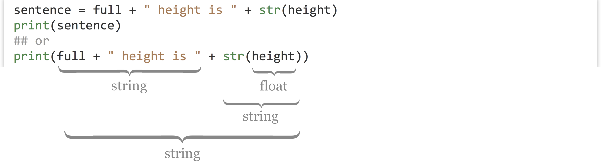
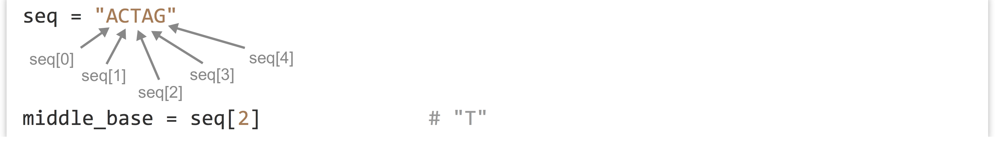

Chapter 7 Elementary Data Types
Variables are vital to nearly all programming languages. In Python, variables are “names that refer to data.” The most basic types of data that can be referred to are defined by how contemporary computers work and are shared by most languages.
Integers, Floats, and Booleans
Consider the integer 10, and the real number 5.64. It turns out that these two are represented differently in the computer’s binary code, partly for reasons of efficiency (e.g., storing 10 vs. 10.0000000000). Python and most other languages consider integers and real numbers to be two different “types”: real numbers are called floats (short for “floating point numbers”), and integers are called ints. We assign data like floats and ints to variables using the = operator.
print("Hello world!")
exons = 10 # an int
theta = 5.64 # a float
While we’re on the topic of variables, variable names in Python should always start with a lowercase letter and contain only letters, underscores, and numbers.
Note that the interpreter ignores # characters and anything after them on the line.20 This allows us to put “comments” in our code. Blank lines don’t matter, either, allowing the insertion of blank lines in the code for ease of reading.
We can convert an int type into a float type using the float() function, which takes one parameter inside the parentheses:
exons_as_float = float(exons) # return 10.0 (a float)
Similarly, we can convert floats to ints using the int() function, which truncates the floating point value at the decimal point (so 5.64 will be truncated to the int type 5, while -4.67 would be truncated to the int type -4):
theta_as_int = int(theta) # return 5 (an int)
This information is useful because of a particular caveat when working with most programming languages, Python included: if we perform mathematical operations using only int types, the result will always be an int. Thus, if we want to have our operations return a floating point value, we need to convert at least one of the inputs on the right-hand side to a float type first. Fortunately, we can do this in-line:
a = 10 # an int
b = 3 # an int
answer_1 = a / b # int/int returns int: 3
answer_2 = a / float(b) # int/float returns float: 3.3333
c = 2.55 # a float
answer_3 = (b + c) * a # (int + float) * int returns (float) * int...
# ... return float: 55.5
In the last line above, we see that mathematical expressions can be grouped with parentheses in the usual way (to override the standard order of operations if needed), and if a subexpression returns a float, then it will travel up the chain to induce floating-point math for the rest of the expression.21
Another property of importance is that the right-hand side of an assignment is evaluated before the assignment happens.
value = 7
value = value + 1
print(value) # prints 8
Aside from the usual addition and subtraction, other mathematical operators of note include ** for exponential powers and % for modulus (to indicate a remainder after integer division, e.g., 7 % 3 is 1, 8 % 3 is 2, 9 % 3 is 0, and so on).
a = 7
b = 3
c = a % b # modulus ("remainder"): 1
c = a ** b # exponent: 343
Notice that we’ve reused the variables a, b, and c; this is completely allowable, but we must remember that they now refer to different data. (Recall that a variable in Python is a name that refers to, or references, some data.) In general, execution of lines within the same file (or cell in an iPython notebook) happens in an orderly top-to-bottom fashion, though later we’ll see “control structures” that alter this flow.
Booleans are simple data types that hold either the special value True or the special value False. Many functions return Booleans, as do comparisons:
sun_is_yellow = True # boolean True
test = 2 < -3 # boolean False
For now, we won’t use Boolean values much, but later on they’ll be important for controlling the flow of our programs.
Strings
Strings, which hold sequences of letters, digits, and other characters, are the most interesting basic data type.22 We can specify the contents using either single or double quotes, which can be useful if we want the string itself to contain a quote. Alternatively, we can escape odd characters like quotes if they would confuse the interpreter as it attempts to parse the file.
first = "Shawn"
last = "O'Neil" # string
last = 'O\'Neil' # same string
Strings can be added together with + to concatenate them, which results in a new string being returned so that it can be assigned to a variable. The print() function, in its simplest form, takes a single value such as a string as a parameter. This could be a variable referring to a piece of data, or the result of a computation that returns one:
full = first + last
print(full) # prints "ShawnO'Neil"
print(first + " " + last) # prints "Shawn O'Neil"
We cannot concatenate strings to data types that aren’t strings, however.
height = 5.5
sentence = full + " height is " + height # Error on this line!
Running the above code would result in a TypeError: cannot concatenate 'str' and 'float' objects, and the offending line number would be reported. In general, the actual bug in your code might be before the line reporting the error. This particular error example wouldn’t occur if we had specified height = "5.5" in the previous line, because two strings can be concatenated successfully.
Fortunately, most built-in data types in Python can be converted to a string (or a string describing them) using the str() function, which returns a string.

As the above illustrates, we may choose in some cases to store the result of an expression in a variable for later use, or we may wish to use a more complex expression directly. The choice is a balance between verbose code and less verbose code, either of which can enhance readability. You should use whatever makes the most sense to you, the person most likely to have to read the code later!
Python makes it easy to extract a single-character string from a string using brackets, or “index” syntax. Remember that in Python, the first letter of a string occurs at index 0.

The use of brackets is also known as “slice” syntax, because we can them it to extract a slice (substring) of a string with the following syntax: string_var[begin_index:end_index]. Again, indexing of a string starts at 0. Because things can’t be too easy, the beginning index is inclusive, while the ending index is exclusive.
seq = "ACTAG"
subseq = seq[1:4] # "CTA"
A good way to remember this confusing bit of syntax is to think of indices as occurring between the letters.

If a string looks like it could be converted to an int or float type, it probably can be with the float() or int() conversion functions. If such a conversion doesn’t make sense, however, Python will crash with an error. For example, the last line below will produce the error ValueError: could not convert string to float: XY_2.7Q.
exons_str = "10"
theta_str = "5.64"
evalue_str = "2.5e-4"
exons = int(exons_str) # int 10
theta = float(theta_str) # float 5.64
evalue = float(evalue_str) # float 0.00025
test = float("XY_2.7Q") # Error on this line!
To get the length of a string, we can use the len() function, which returns an int. We can use this in conjunction with [] syntax to get the last letter of a string, even if we don’t know the length of the string before the program is run. We need to remember, though, that the index of the last character is one less than the length, based on the indexing rules.
seq = "ACTAG"
seq_len = len(seq) # int 5
last_letter = seq[seq_len - 1] # string "G"
## or
last_letter = seq[len(seq) - 1] # string "G"
Similarly, if we want a substring from position 2 to the end of the string, we need to remember the peculiarities of the [] slice notation, which is inclusive:exclusive.
end_seq = seq[2:len(seq)] # indices 2 to 5, inclusive:exclusive
print(end_seq) # print "TAG"
Immutability
In some languages it is possible to change the contents of a string after it’s been created. In Python and some other languages, this is not the case, and strings are said to be immutable. Data are said to be immutable if they cannot be altered after their initial creation. The following line of code, for example, would cause an error like TypeError: 'str' object does not support item assignment:
seq = "ACTAG"
seq[2] = "C" # Error on this line!
Languages like Python and Java make strings immutable for a variety of reasons, including computational efficiency and as a safeguard to prevent certain common classes of programming bugs. For computational biology, where we often wish to modify strings representing biological sequences, this is an annoyance. We’ll learn several strategies to work around this problem in future chapters.
In many cases, we can make it look like we are changing the contents of some string data by reusing the variable name. In the code below, we are defining strings seqa and seqb, as well as seqc as the concatenation of these, and then seqd as a substring of seqc. Finally, we reuse the seqa variable name to refer to different data (which gets copied from the original).
seqa = "ACTAG" # "ACTAG"
seqb = "GGAC" # "GGAC"
seqc = seqa + seqb # "ACTAGGGAC"
seqd = seqc[2:7] # "TAGGG"
seqa = "ATG" + seqa # redefine seqa, "ATGACTAG"
Here’s how we might represent these variables and the data stored in memory, both before and after the reassignment of seqa.

Because the string "ACTAG" is immutable, redefining seqa results in an entirely different piece of data being created. The original string "ACTAG" will still exist in memory (RAM) for a short time, but because it is not accessible via any variables, Python will eventually clean it out to make room in memory in a process known as garbage collection.23 Garbage collection is an automatic, periodic process of de-allocating memory used by data that are no longer accessible (and hence no longer needed) by the program.
This immutability of strings could result in code that takes much longer to execute than expected, because concatenating strings results in copying of data (see the results of seqc = seqa + seqb above). For example, if we had a command that concatenated chromosome strings (millions of letters each) to create a genome string, genome = chr1 + chr2 + chr3 + chr4, the result would be a copy of all four chromosomes being created in memory! On the other hand, in many cases, Python can use the immutability of strings to its advantage. Suppose, for example, that we wanted to get a large substring from a large string, centromere_region = chr1[0:1500000]. In this case, Python doesn’t need to make a copy of the substring in memory. Because the original string can never change, all it needs is some bookkeeping behind the scenes to remember that the centromere_region variable is associated with part of string chr1 references. This is why seqd in the figure above does not duplicate data from seqc.
None of this discussion is to imply that you should worry about the computational efficiency of these operations at this point. Rather, the concept of immutability and the definition of a variable (in Python) as a “name that refers to some data” are important enough to warrant formal discussion.
Exercises
Create and run a Python program that uses integers, floats, and strings, and converts between these types. Try using the
bool()function to convert an integer, float, or string to Boolean and print the results. What kinds of integers, floats, and strings are converted to a BooleanFalse, and what kinds are converted toTrue?We know that we can’t use the
+operator to concatenate a string type and integer type, but what happens when we multiply a string by an integer? (This is a feature that is fairly specific to Python.)What happens when you attempt to use a float type as an index into a string using
[]syntax? What happens when you use a negative integer?Suppose you have a sequence string as a variable, like
seq = "ACTAGATGA". Using only the concepts from this chapter, write some code that uses theseqvariable to create two new variables,first_halfandsecond_halfthat contain the first half (rounded down) and the second half (rounded up) ofseq. When printed, these two should print"ACTA"and"GATGA", respectively.#!/usr/bin/env python seq = "ACTAGATGA" ## Write some code here: print(first_half) # should print "ACTA" print(second_half) # should print "GATGA"Importantly, your code should work no matter the string
seqrefers to, without changing any other code, so long as the length of the string is at least two letters. For example, ifseq = "TACTTG", then the same code should result infirst_halfreferring to"TAC"andsecond_halfreferring to"TTG".
The
#symbols are ignored unless they occur within a pair of quotes. Technically, the interpreter also ignores the#!line, but it is needed to help the system find the interpreter in the execution process if running the program as a script.↩︎This isn’t true in Python 3.0 and later; e.g.,
10 / 3will return the float3.33333.↩︎Unlike C and some other languages, Python does not have a “char” datatype specifically for storing a single character.↩︎
Garbage collection is a common feature of high-level languages like Python, though some compiled languages support it as well. C does not: programmers are required to ensure that all unused data are erased during program execution. Failure to do so is known as a “memory leak” and causes many real-world software crashes.↩︎